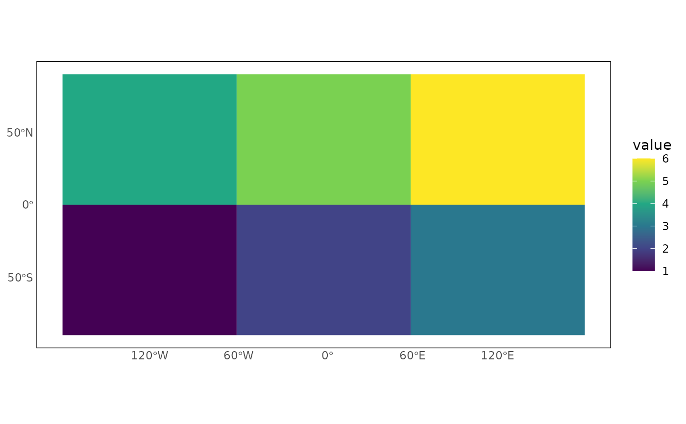

Joins a variable to configured cell polygons and creates a publication-ready
ggplot2 map using pg_theme().
Usage
pg_plot(
data,
variable,
pg_id = "pgid",
time = NULL,
time_value = NULL,
crs = NULL,
na_color = "grey90",
border_color = NA,
config = priogrid::pg_current_config()
)Arguments
- data
A data frame containing cell IDs and the variable to plot.
- variable
Name of the variable to map.
- pg_id
Name of the cell-ID column.
- time
Optional temporal column name.
- time_value
A single temporal value to select when
timeis supplied.- crs
Optional map coordinate reference system.
- na_color
Fill color for missing values.
- border_color
Cell-border color. Use
NAfor no borders.- config
A PRIO-GRID configuration object.
Examples
config <- priogrid::pg_config(nrow = 2, ncol = 3)
x <- data.frame(pgid = 1:6, value = 1:6)
pg_plot(x, "value", config = config)
